위생관리
안중사과나무치과는 입안에 쓴 모든 기구를 한 번 쓰고 나면 멸균합니다. 일반 기구는 여덟 단계, 치아를 다듬는 핸드피스는 다섯 단계를 거쳐 멸균한 뒤 자외선 소독기에 보관해 씁니다.
기존 홈페이지 2026년 11월 내용 기준
기구 멸균 여덟 단계
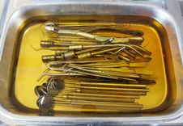
세척 전 용액 보관
진료에 쓴 기구를 용액에 담가 보관합니다.
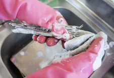
1차 세척
세제로 꼼꼼하게 1차 손세척을 합니다.
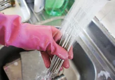
흐르는 물에 헹굼
흐르는 물에 깨끗하게 헹굽니다.
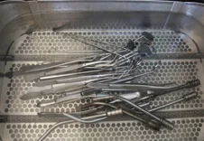
초음파 세척
초음파로 손으로 씻을 수 없는 작은 틈까지 꼼꼼하게 세척합니다.
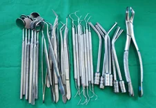
기구 건조
세척을 확인한 뒤 기구를 말립니다.
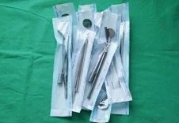
포장
마른 기구를 알맞은 포장지로 포장합니다.
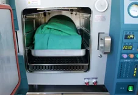
고압증기 멸균
고압증기 멸균기에 넣어 한 번 더 멸균합니다.
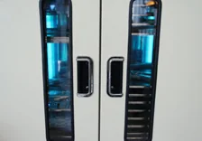
자외선 소독기 보관
자외선 소독기에 넣어 보관하며 씁니다.
핸드피스 멸균 다섯 단계
핸드피스는 치아를 정밀하게 다듬는 기구로 안에 비싼 부품이 들어 있어 일반적인 방법으로 멸균하기 어렵습니다. 그래서 핸드피스는 따로 다섯 단계를 거칩니다.
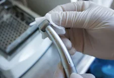
알코올 소독
알코올 솜으로 표면을 소독합니다.
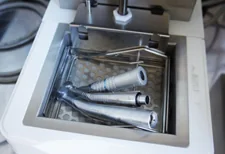
오일 멸균기
오일 멸균기에서 핸드피스 전체를 소독합니다.
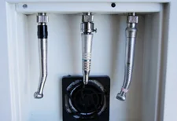
전용 클리너
핸드피스 안에 전용 오일을 넣어 이물질을 없앱니다.
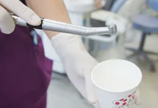
공회전
물을 뿜으며 공회전시켜 안에 남은 오일을 깨끗하게 뺍니다.
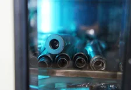
소독기 보관
자외선 소독기에 넣어 보관하며 씁니다.
세척·멸균 장비
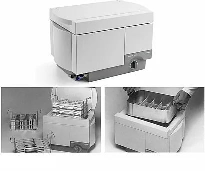
초음파 세척기
Ultrasonic Cleaner고압 멸균기에 넣기 어려운 File, Bur, 임플란트 수술 기구 같은 작은 기구를 초음파 진동으로 작은 구멍과 좁은 틈까지 세척합니다.
고압증기 멸균기
Autoclave · 진공 건조 방식물을 직접 데워 만든 포화 증기로 의료 기구를 멸균하는 소형 멸균기입니다.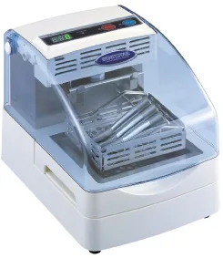
핸드피스 멸균기
110도 4분 살균 · 136도 25분 멸균핸드피스 안쪽까지 살균·멸균하며, 식품첨가물 성분의 전용 오일을 씁니다.
치과 수관 관리와 정수
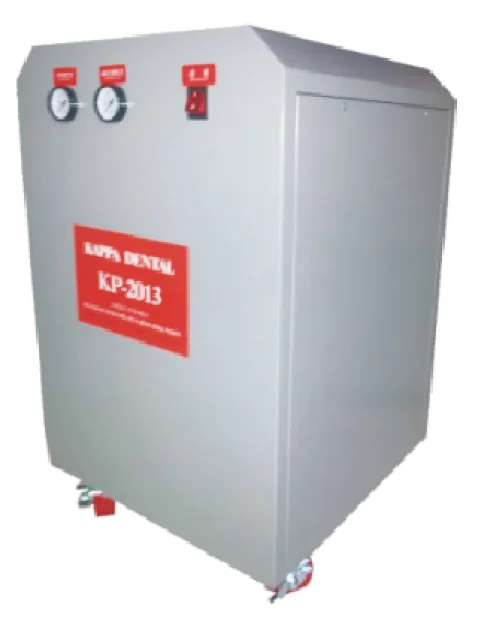
치과용수 살균 정수기
급수 배관 시작점진료에 쓰는 물을 살균하고, 진료 의자로 물을 보내는 배관 안에 세균막(바이오필름)이 생기는 것을 막는 장치입니다.치과 수관용 살균소독 세척제
벨기에산살균소독과 탈취를 한 뒤 물과 산소만 남는 세척제입니다.